تاثیرمنفی بلاگرها بر سلامت روان جامعه
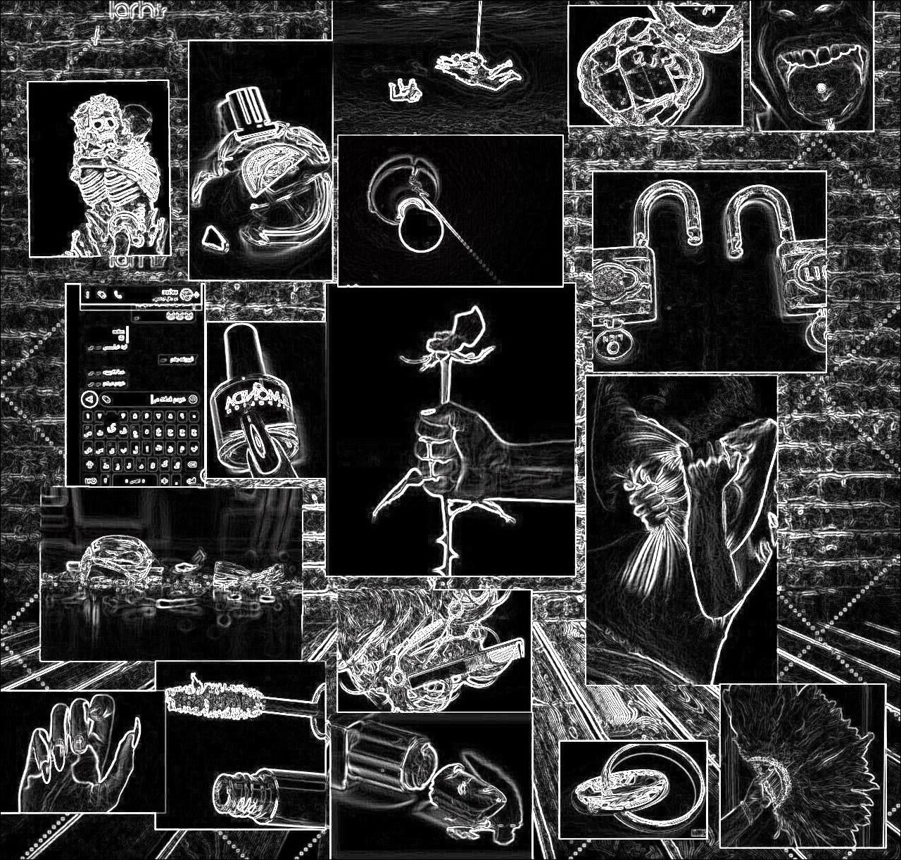
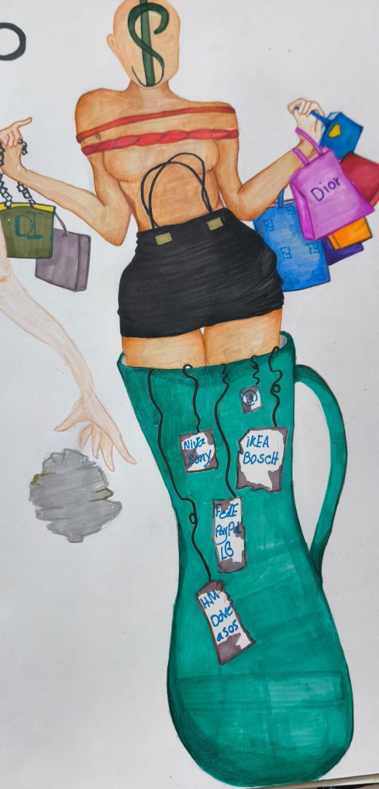
مصرف گرایی
لیوان پرشده : غنی بودن وزیاده خواهی،غرق شدن در دنیای خرید،اضافه برسازمان
مارک های بیرون ریخته ازلیوان :انواع برندها
$:هزینه تراشی
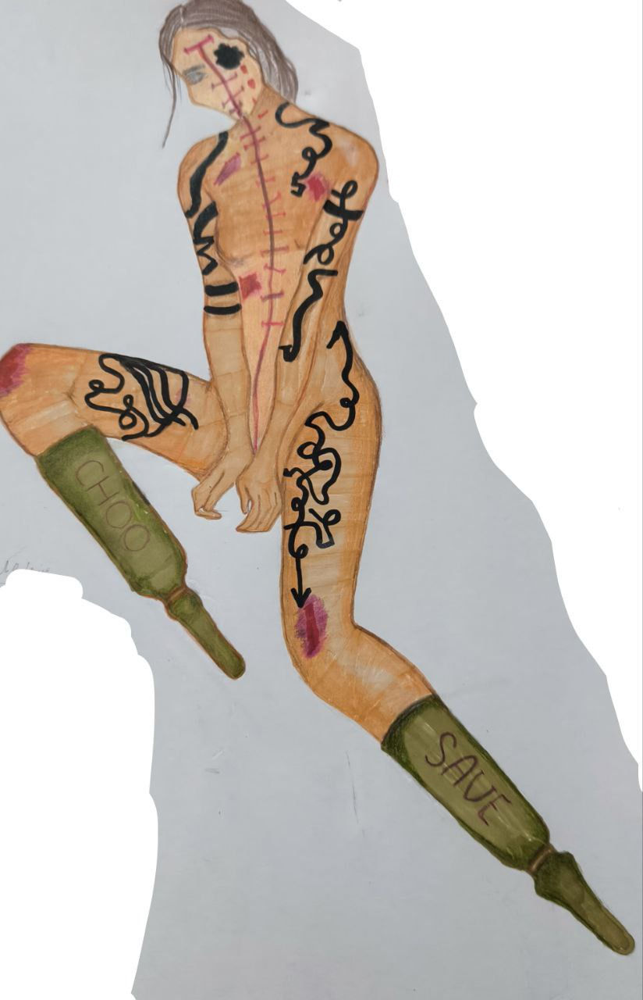
فیزیولوژیک
بخیه : اثرات دردناک عمل هاجراحی
خالکوبی های زیاد : غیرعادی بودن دریدن
محلول آمپول : استفاده از محلول هایی که مختص به زیبایی است ومضرات زیادی به همراه دارد
زخم هاوکبودی ها: تغیرپوست عوارض ناسالم جراحی
بندسیاه روی چشم : ندیدن زیبایی بدن
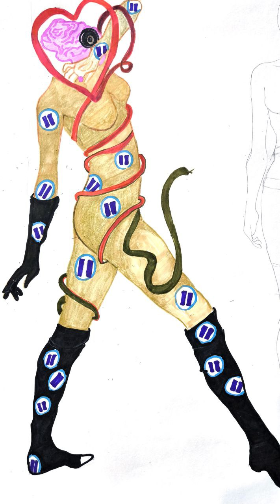
عدم نارضایتی از خود
درمان ذهنی که دچارافکارمنفی ست
نشانه های استوپ : خسته شدن وادامه ندادن
مار : به عنوان یک جاندار ترسناک به وجودآمدن ازحرف های مردم
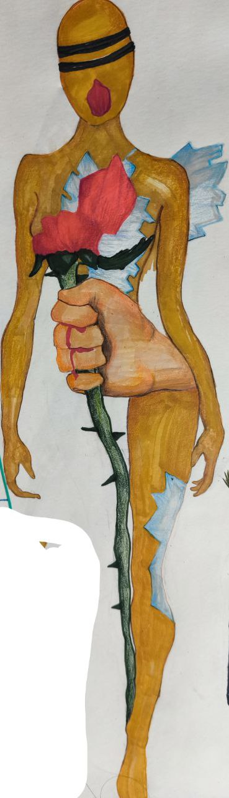
عدم رضایت از شریک عاطفی
شیشه شکسته:قلبی که شکست
گل پژمرده :محبتی که دریافت نشد
تیغ های گل:اثرات بدرفتاریهای طرف مقابل
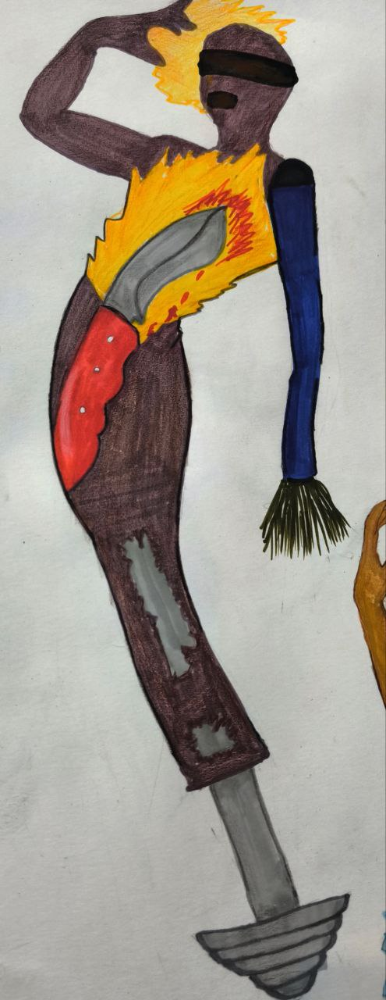
فیزیولوژیک
آتیش : نشاندهنده خشم
چاقو : بریدن وجراحی کردن فقط به دلیل نارضایتی
وزنه:انجام دادن ورزش های سنگین
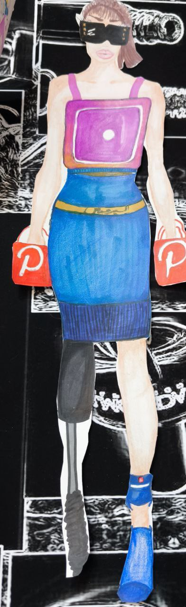
عدم رضایت از خود
تاثیر فضای مجازی
اینستاگرام : پوشیدن به عنوان جزئی از لباس مخصوص مورد علاقه خویش
اکسیر جوانی : تبلیغات داخل فضای مجازی برای تغییر خود
شبیه شدن به بلاگرهایی که برای زندگی خود تبلیغات ناسالمی دارند
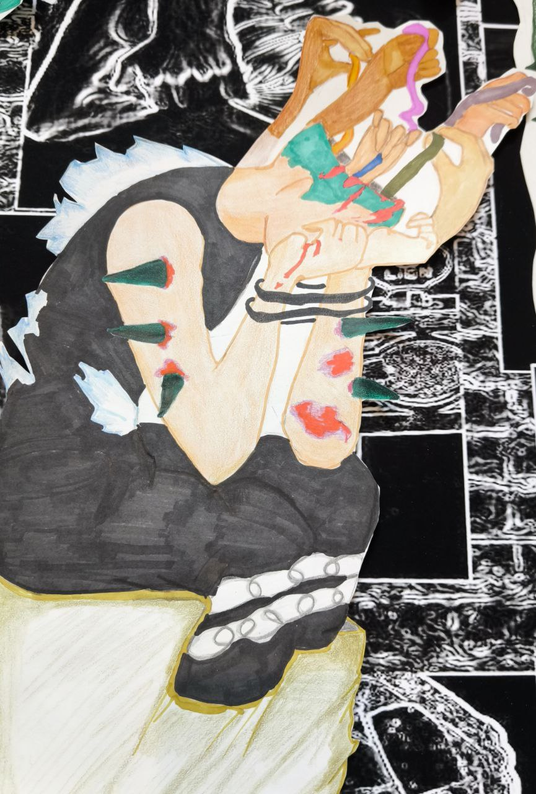
عدم اعتماد به نفس
حرف های مردم موجب شکست یک فرد ضعیف شده
بندهای دردست : اثرات حرفهای زیادمردم است
تیغ های موجود در بدن : توجه به بیهوده ترین سخن هاوتحت تاثیر قرارگرفتن است
بندی که باعث بسته شدن دست های آزاد میشود : آزادی راازفردمیگیرد
شیشه شکسته : شکسته شدن قلب یک انسان رامیرساند
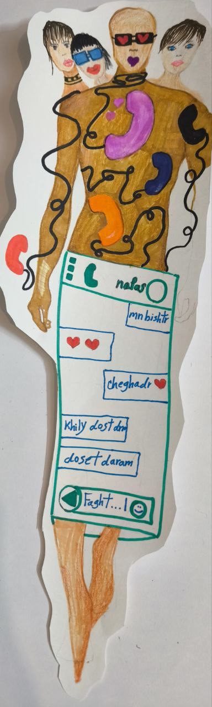
خیانت
صفحه چت ،تلفن های رنگی وزیاد : علت شروع رابطه
سه خانم : تنوع طلبی مردها
قلب بنفش : فقط پیرو هوی و هوس بودن مردها رانشان میدهد
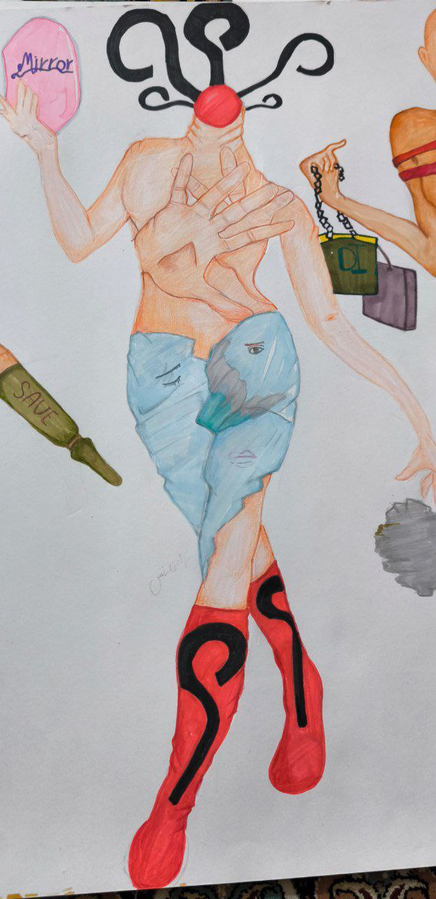
عدم اعتماد به نفس
علامت سوال:سوال های بی موردازخود،نشانه ترس
آینه :احساس ناکافی بودن ومدام ایراد گرفتن از اندام خود
دستها:نشاندهنده خجالتی بودن
شیشه ها:عدم رضایت از اندام خویش
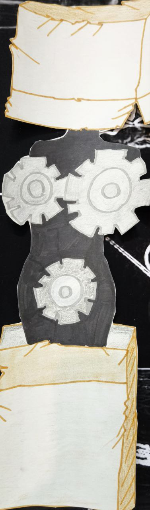
عدم اعتمادبهنفس
کارتون های خراب : پنهان کردن خود وافکارخود
چرخدنده های نامتقارن درسینه ها : نیازمندتغیروتحول
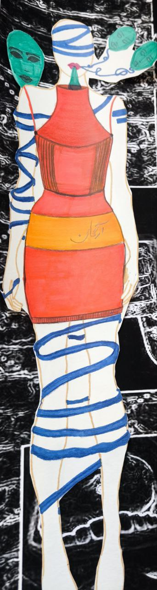
عدم رضایت از خود
ماسک ها : تنوع طلبی
روغن آرگان : استفاده از لوازم آرایشی
بندی که تمام بدن را بسته : درگیری ذهن نسبت به خود
بالا آوردن : بیش ازحد به این افکار فکرکردن وخیته شدن بدن
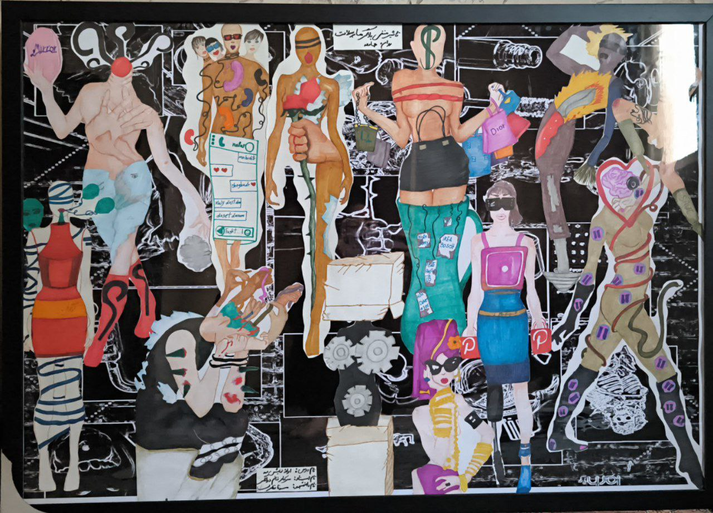
نام درس : ارائه نمایش مد
نام استاد : سرکار خانم مارال دواتگر